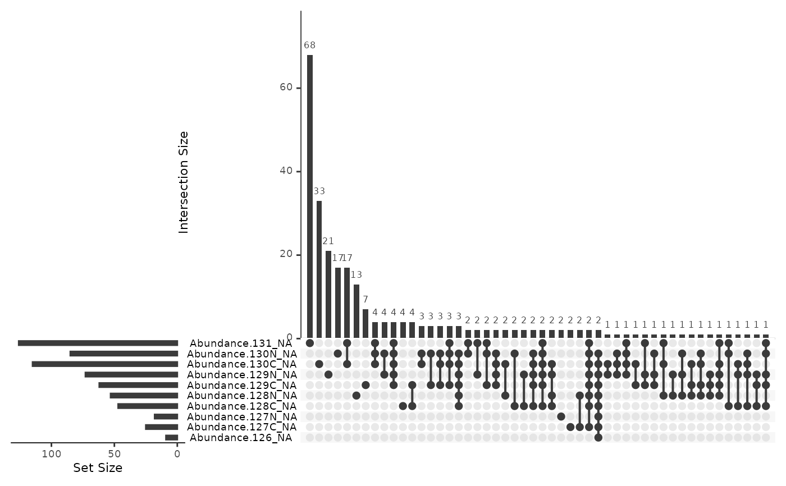
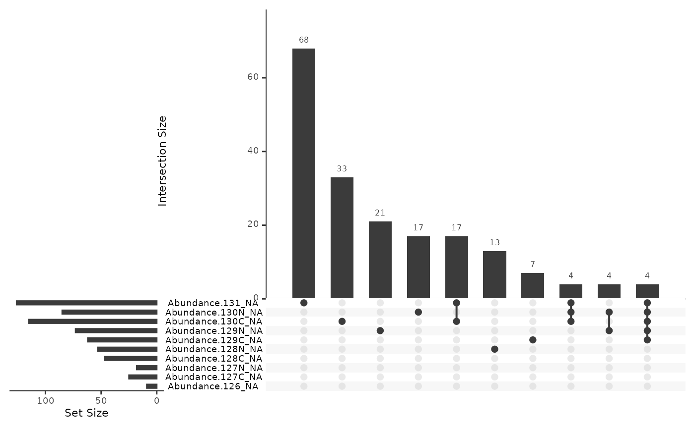

The patterns in missing values can be informative with respect to whether the experiment has worked, or if particular samples are outliers. This function uses an 'upset' plot to show the most common missing value patterns across the samples, the top 50 by default
Arguments
- obj
QFeatures. Proteomics dataset- i
string. Index for the SummarisedExperiment you wish to plot- ...
additional arguments passed onto
naniar::gg_miss_upset, and from there ontoUpSetR::upset. Arguments given here override the defaults set by this function (sets,keep.orderandnintersects).
Examples
tmt_qf <- QFeatures::readQFeatures(assayData = psm_tmt_total,
quantCols = 36:45,
name = "psms_raw")
#> Checking arguments.
#> Loading data as a 'SummarizedExperiment' object.
#> Formatting sample annotations (colData).
#> Formatting data as a 'QFeatures' object.
# which combinations of samples are missing together?
plot_missing_upset(tmt_qf, "psms_raw")
#> Warning: `aes_string()` was deprecated in ggplot2 3.0.0.
#> ℹ Please use tidy evaluation idioms with `aes()`.
#> ℹ See also `vignette("ggplot2-in-packages")` for more information.
#> ℹ The deprecated feature was likely used in the UpSetR package.
#> Please report the issue at <https://github.com/hms-dbmi/UpSetR/issues>.
#> Warning: Using `size` aesthetic for lines was deprecated in ggplot2 3.4.0.
#> ℹ Please use `linewidth` instead.
#> ℹ The deprecated feature was likely used in the UpSetR package.
#> Please report the issue at <https://github.com/hms-dbmi/UpSetR/issues>.
#> Warning: The `size` argument of `element_line()` is deprecated as of ggplot2 3.4.0.
#> ℹ Please use the `linewidth` argument instead.
#> ℹ The deprecated feature was likely used in the UpSetR package.
#> Please report the issue at <https://github.com/hms-dbmi/UpSetR/issues>.

# just the ten most common patterns
plot_missing_upset(tmt_qf, "psms_raw", nintersects = 10)
